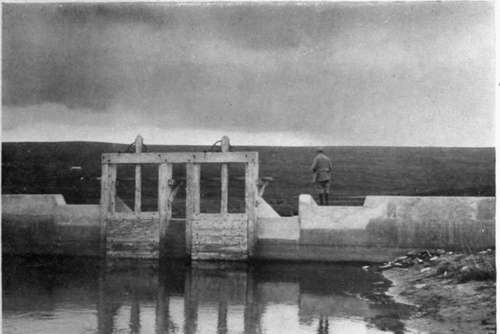
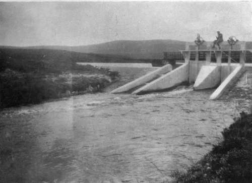

Chapter XI. Storage And Passes
Description
This section is from the book "Salmon Fishing", by W. Earl Hodgson. Also available from Amazon: Salmon Fishing.
Chapter XI. Storage And Passes
Improving the Thurso-Making a Lake-Results of Agricultural Drainage-Too much Water, and Too Little-Misgivings about Storage Unfounded-The Helmsdale- Remarkable Success of Storage-Loch Lee and the North Esk-Other Rivers-Conflicting Interests-Root of the Trouble-Salmon Passes-A Principle Discovered by Chance-From Despair to Hope-A Bright Prospect.
The Thurso, which rises amid the hills bordering Sutherland and Caithness, and, after a course of about forty miles, falls into the North Sea, is being made the subject of an important experiment. In order that the water may never be too low for salmon fishing, artificial storage is being arranged.
At Dalnawillan, about thirty miles up the river, there is a tract of flat land three miles long, about half a mile broad, and narrow at the lower end. Across that narrow part a wall fitted with a fish pass is to be built. The lake thus formed on the Thurso will contain 829 million gallons. Besides this, Loch More is to be raised eight feet; which will add to its volume 1200 million gallons. The stored water will be controlled by sluices at the outflow. By means of these it will at all times be possible to have the height of the river at whatever level may be desired.
Front And Back Views Of Badanloch Dam As Originally Built.
Two feet have since been added to the height.
Why are these artifices necessary ?
As will have been perceived from Chapters vii., viii., and ix., rivers in almost all regions of the United Kingdom have had their natural order disturbed. In Scotland, where it is particularly marked, the disturbance seems to have begun about a hundred years ago. At that time landowners and farmers awoke to the fact that the hills would carry more sheep, which would produce better mutton and richer wool, if the lands were not boggy in so many places. That was the origin of a movement which has changed the nature of the Highlands and in particular the nature of the rivers. Here and there a drain was made that the water might be speeded off; and now at length practically all the mountains and the hills are seamed with channels from the summits. The end which was in view has been attained. Many thousands of acres originally swamp now bear heather or good grass, and the sheep-carrying capacity of the hills has been greatly extended. Grouse also, and even the red-deer, have prospered through the reform. These game birds and beasts require water, and plenty of it; but, as far as can be made out, they had rather too much in the original state of nature, and they do not, as a rule, seem to have too little now. On the other hand, the fish of the rivers in the valleys have fared otherwise. The waters are very unstable in volume. They rise to levels much higher, and fall to levels much lower, than they ever reached in the days when rain over the watersheds had to find its own way towards them. In the old times each storm of rain, the water filtering slowly, kept the rivers in fair flow until the next; nowadays, through the artificial courses, the water is carried off almost as quickly as it falls, and there is no reserve for the periods of fair weather.
On the salmon rivers, as on the trout streams, the results have been rather serious. The commercial fisheries have not suffered much, if at all; but that is probably because most of these are in the estuaries, which, at least when the tide is not at full ebb, are kept in normal volume by the sea. Sportsmen are not so well off as the professional fishers. They may become tenants of well-reputed stretches for a month or two months, or even three, either in spring or in autumn ; but they cannot be sure that salmon will be in the waters, or that if the fish are there the waters will be of the proper, which is the natural, height. Even in the British Islands, the meteorological influences over which are peculiarly complex, weather has a certain periodicity, and we have phrases, such as " the Lammas Flood," which indicate that rain-storms at stated times are as much to be expected as frosts at others; but the periodicity is subject to frequent exceptions. In 1904, for example, saving over a part of Argyllshire, Scotland had no considerable rain after the beginning of August. The result was disappointment on all the salmon rivers. Some held a few fish; but these had been so long in the water that they would not look at lures. In other rivers the salmon were not higher than the estuaries, waiting for the floods which did not come until after the close of the season.
While " too little water " is a frequent complaint among sportsmen, too much is not unheard of. There is nearly always an excess after a heavy rain. Certain rivers are so broad that they can be fished effectively only from a boat, and, even with a pair of stalwart Highland gillies at the oars, a boat cannot hold its own against the torrent which follows an abundant rain. Besides, although, as has been admitted, the net fisheries seem to be as productive as ever, it is not unreasonable to suppose that interference with the order of Nature in the rivers must eventually, if measures to neutralise it are not taken, reduce the stock. Spent fish are readily susceptible to attack from the " bacillus salmonis pestis " ; often, when the spring rains are dilatory, their departure to the sea is delayed; every unnatural hour they spend in the fresh water is an extra risk, not only to themselves, but also to the whole stock of their particular river.
The measures which are being taken on the Thurso have every prospect of success. They are, as has been said, an experiment; but, as will be shown immediately, they are not without precedent. When storage was under discussion as a theory certain naturalists contemplated it without much hope. They reasoned that a flood from a reservoir was not the same thing as a flood from the clouds; that fresh rain-water was highly aerated, and stored water not at all; that man might bring water to the salmon, but could not make him run or rise. These thoughts had cogency; but, happily, they have proved erroneous. After all, artificial storage is an attempt to redress the balance of Nature in a natural way. It stands to reason that most of the water which is now rushed to the sea in raging floods is waste. The volume is much more than any natural needs of the rivers claim. Why should not the excess be kept for the rainless day ? When one comes to think of it, there is nothing unnatural, and therefore nothing unscientific, in the plan. It is only an attempt to restore the rivers to their original state. Of course, the system which is about to be applied to the Thurso can never be equal to the system of Nature before the lands were drained. To be of use for the whole of a river, the reservoir must be near the source. It will gather only a small fraction of the rain on the whole watershed. Still, it will gather enough to be very useful in times of drought. Indeed, the system will be a triumph if by means of it the salmon can be enticed to run into the rivers at the times of the year when they are due, and helped back to the sea when lingering in fresh water would be unnatural.
Continue to:
Tags
salmon, fish, river, fishing, trout, loch, flies, fishing flies